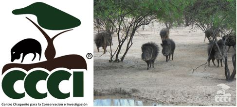

Center for Conservation and Research – CCCI
It has its origins in the year 1985 when a new mammal is discovered in the Chaco, due to an alarming decrease and also a little known species (Catagonus wagneri) the Taguá, several institutions meet and through an agreement between the Zoological Society of San Diego (USA ), the Ministry of Agriculture and Livestock (Py) and the Peace Corps of the United States of America; they decide to start a research and captive breeding project, called “Taguá Project”.
The first headquarters was in Alto Paraguay, but due to the difficult accessibility of the site during the rains, it was relocated to a more accessible and easily accessible site, currently in Fortín Toledo.
In 2010, the Taguá Project ceased to be a project to become the Chaco Center for Conservation and Research (CCCI), a non-profit association whose purpose is to continue and expand the work of captive breeding, conservation, health and sustainable development of Paraguay with emphasis on the Chaco region.